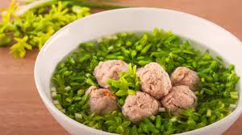

Canh hoa thiên lý chả cua

- Khẩu phần 4
- Chuẩn bị 10 phút
- Thực hiện 15 phút
Nguyên liệu
- 200g hoa thiên lý
- 100g giò sống
- 50g thịt cua
- 5g hành tím, băm nhuyễn
- 1 lít (4 chén) nước
- 16g (3 muỗng cà phê) Hạt nêm từ Thịt Thăn,
Xương Ống & Tủy - Bổ sung Vitamin A
- 0.5g (1/2 muỗng cà phê) tiêu xay
Hướng dẫn thực hiện
- Trộn cua và giò sống với hành tím, 1 muỗng cà phê hạt nêm và tiêu xay.
- Đun sôi 1 lít nước, vo viên hoặc múc từng muỗng nhỏ hỗn hợp cua và giò
sống cho vào nồi.
- Thêm hoa thiên lý vào nồi, đun sôi.
- Nêm với Hạt nêm từ Thịt Thăn, Xương Ống & Tủy - Bổ sung Vitamin A.
- Rắc tiêu xay, dùng nóng.